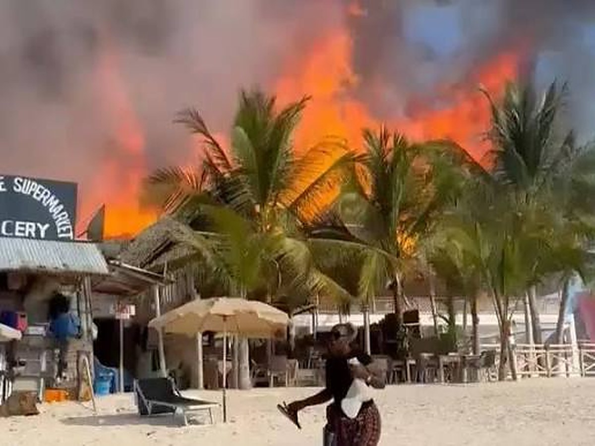

Photograph: Onyango George / EA Hospitality Pulse
One oven at Nungwi burned six hotels. Zanzibar inspects one building at a time.
A bread oven at the Makofi hotel caught at about 2.20pm on Saturday. Three hours later six hotels, four restaurants and some forty shops on Zanzibar's busiest beach had stopped being businesses. This is the fourth multiple-property fire on an East African thatched strip since 2017, and it is not a building failure. It is a failure to regulate the space between buildings, inside an insurance market that collects two thirds of its money from the visitor rather than from the host.
The bread oven at the Makofi hotel caught at about twenty past two on Saturday afternoon, which on a Zanzibar beach is the hour when the kitchens are quiet and the guests are in the water. Three hours later, six hotels, four restaurants and something close to forty shops at the northern tip of Unguja had stopped being businesses. A hundred and eighty-three tourists were walked off the sand. More than twenty neighbouring properties opened rooms for nothing. Nobody died. Several hotel staff were hurt during the evacuation, which is to say they were hurt getting other people out.
Nasra Nassor Omar, Zanzibar's minister of tourism and antiquities, gave that account on Sunday. She said preliminary findings pointed to the oven at Makofi as the ignition source, that the cause remained under investigation, and that the speed of the spread was down to the thatched roofs. Her officials put the time the fire was brought under control at roughly three hours. Arif Abbas Manji, executive secretary of the Zanzibar Commission for Tourism, used the moment to urge tourism investors to install sprinkler systems.
Both statements are accurate and both miss what happened. What burned on Saturday was not six hotels. It was one hotel, six times over, because the Nungwi seafront is not six buildings standing near each other. It is a single combustible surface, continuous makuti under a reliable afternoon wind, subdivided only by title deeds. Fire does not read title deeds. The ignition was a kitchen accident of the sort that happens in every commercial kitchen on earth, several times a year, and is contained by a fire blanket and a bucket. What turned it into a destination-level loss was the one variable nobody licenses, inspects or insures: the distance between one property's roof and the next one's.
That is not a reading invented for this week. It is the only reading the record supports, and the record is now long. In February 2017 the Ras Nungwi Beach hotel was severely damaged by fire and, nine years on, has not been rebuilt. In November 2021, four tourist hotels at Jambiani burned. In July 2023, five hotels along the Paje strip in Unguja South went in a single night: the Nest, Meraki, Drifters, Maisha Matamu and Cristal Resort, the fire starting in the Nest's kitchen and jumping, in the words of the report carried by Tanzania's Daily News, "to other four neighboring hotels". The Citizen's account of the same night was blunter about the mechanism, saying the fire spread "because of the wind and considering that they are roofed with coconut leaves". Gaudianus Felician Kamugisha, the assistant commissioner of police then serving as regional police commander for Unguja South, described the night this way: "Fire fighters, Police and residents teamed up to fight the fire until around 3am." Rajab Mkasaba, the district commissioner, put the end of it slightly earlier: "We started to fight the fire after midnight and controlled it."
One hotel in 2017, four in 2021, five in 2023, six in 2026. Four events, sixteen properties, one mechanism, and no recorded instance of a single-property beach hotel fire on that coast being contained to a single property. A risk that expresses itself in multiples every time it expresses itself at all is not a property risk. It is a street risk, and it is being managed as though it were a property one.
The same arithmetic holds across the channel. In February 2023 a fire at the Mbuyu lodge in Watamu, attributed to an electrical fault, took in the neighbouring Barracuda resort and a third hotel. Buonasera Giuseppe, who owns Barracuda, told the Star the blaze "spread very fast due to the Makuti thatched roof", damaging close to 60 per cent of his resort. Residents told the same reporter it had been windy. The Kilifi county fire engine, when it finally came, developed mechanical problems. Giuseppe was struck by a looter while trying to clear his own property, and said afterwards: "One of the looters hit me with a blunt object as we tried to chase them away but I am okay." In Diani, a fire that started in a bungalow at Neptune's Palm hotel at about half past five in the evening moved, fanned by strong winds, into the adjacent Village and Paradise hotels, destroying the makuti roofs of all three. Jackson Kifoto, the resident manager, gave the cleanest description of the East African beach fire anyone has yet managed: "The fire spread fast and it was hard to put out as it moved from one hotel to another."
Fifty-three guests were in the Palm that evening. Mwangi Kahiro, then acting Kwale county commissioner, stood on the beach and said: "We will stay here until all visitors have been evacuated and then we will know the next course of action." Nobody, in the four years since, has announced what that next course of action was.
Which brings the argument to the uncomfortable part. Zanzibar's licensing architecture, as set out in the consultancy guidance that foreign hotel investors actually read, requires a fire safety certificate issued by the Department of Fire and Rescue Services after a physical audit of suppression systems, exits and evacuation protocols, and that clearance forms part of the dossier for the annually renewable tourism operating licence from the Commission for Tourism. The published description of the Commission's own site inspection, covering facility standards, security protocols, guest amenities and sanitary conditions, does not list fire among the things it looks at. The primary regulation itself is not available online, so the precise statutory position deserves a reporter's caution, and this piece does not assert what the law says. What can be asserted is what the structure does. Every certificate in that chain is issued to a building. Every renewal asks one owner about one plot. Not one instrument in the sequence asks the question that decided Saturday's outcome, which is how far a flame can travel along the Nungwi seafront before it meets a gap, a party wall, a non-combustible roof or a hydrant.
And so the official response to a street-level failure is, once again, a request directed at individuals. Manji's call for sprinklers is reasonable advice. It is also an invitation to each owner to spend capital reducing a risk that is largely created by the neighbour, which is precisely the structure that produces chronic under-investment. A sprinkler at the Z Hotel would not have saved the Makofi, and vice versa. The thing that would have changed Saturday is a firebreak, and a firebreak is not something an owner can buy.
Then there is the money, where the inversion becomes almost too neat. Tanzania's insurance regulator reported that Zanzibar wrote gross premiums of 142.1 billion shillings in 2025, up more than two thirds on the year. Of that, 96.98 billion shillings, which is 68.2 per cent of every insurance shilling written on the islands, came from the compulsory inbound travel policy that visitors must now hold to enter. Set that against the 917,167 international arrivals the Office of the Chief Government Statistician and the Commission for Tourism recorded for 2025 and the compulsory policy worked out at roughly 105,000 shillings a head, somewhere around 41 dollars, consistent with the 44 dollar premium fixed on the mainland. That arithmetic is this publication's own, from two separately published figures, and it is offered as a sense of scale rather than a precise unit price.
Read it against Saturday and it stops being a statistic. Every one of the 183 people evacuated from that beach was insured, by law, as a condition of being allowed into the country. Not one of the six hotels they ran out of was insured by law at all. Across mainland Tanzania, fire accounted for 18.8 per cent of general insurance premiums last year, and the general insurance claims settlement ratio slipped to 64.2 per cent from 66.6 per cent. The regulator's annual report, in the sections that are legible, does not mention business interruption cover, which is the one line in a policy that determines whether a seasonal beach hotel that has lost its building in late November still exists in April. The state has built, with real administrative competence, a mechanism for insuring the visitor. It has not built one for insuring the host, and the host is the party whose asset burns.
The 2023 precedent is the detail that should trouble anyone with a makuti roof. In the days after the Paje fire, Tanzanian reporting recorded that investigators were still establishing whether the thatched hotels had been insured at all. Not what the policies covered, not whether the sums insured matched reinstatement cost, but whether cover existed. The state did not know, the press could not find out, and no published follow-up says what the answer was or whether any of those five hotels reopened. The Ras Nungwi property from 2017 is the one data point on that question available, and it has never been rebuilt.
None of which is an argument that Saturday was anyone's fault. Ovens catch. The honest conclusion is narrower and harder. For nine years the East African coast has run an experiment in whether contiguous thatch on a windy shoreline can be managed by per-building certification and voluntary cover, and the experiment has returned the same result four times. The variables that matter are shared: roofing material, spacing, wind direction, water pressure, and the response time of a county or island fire service that in Watamu arrived late with a broken engine. Shared risk is the thing insurance markets price well and individual owners price badly.
What an operator can do before the next one is unglamorous and does not involve sprinklers. Find out, this week, what the policy actually says: the sum insured against today's reinstatement cost rather than the 2019 build cost, whether business interruption is in there, for how many months, and whether it pays on a neighbour-caused loss. Then walk the boundary and measure the gap to the next roof. The first is a phone call to a broker. The second is a tape measure. Neither requires waiting for a rule that, on the evidence of four fires, is not coming.
📣 Telegram 💬 WhatsApp 💼 LinkedIn 📚 All guides